|
Ho-Leaf (Cinnamomum camphora lin.)
best conventional quality
Extraction method: steam distillation from the leaves
A floral, woody and sweet scent from the chinese Cinnamomum camphora lin. tree. Essential Oil with similar properties to Rosewood. It is used in aromatherapy as a substitute for the wood oil from the endangered rosewood tree, which from the aspect of sustainability is hardly justifiable anymore today. |
| 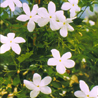 |
Jasmine
Egyptian (Jasminum grandiflorum)
absolute
Extraction method: solvent extraction from the flowers
The scent of «The Queen of the Night» is sweet and
warm, mysterious and delicate. Picking is done from midnight
until dawn, because the fragrance of the flowers diminishes
with increasing sunlight. Jasmine is a very sensuous and feminine
oil; it soothes anxiety, helps to build up self-confidence and
is often used to help us understand the limits of our existence.
(e.g. birth, death). |
| 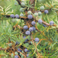 |
Juniper Berry (Juniperus
communis)
certified organic crop
Extraction method: steam distillation from the berries
The juniper bush, which grows wild in the whole of the Mediterranean
area, has been known for its purifying properties since antiquity.
The scent gives protection against negative energy and has an
exhilarating, invigorating effect. It is especially effective
in a purifying and stimulating bath or massage. |
| 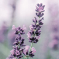 |
Lavender, True (Lavandula
angustifolia)
certified organic crop
Extraction method: steam distillation from the flowering twigs
True lavender only flourishes at an altitude of above 600 metres
and is known as the medicinal plant with the most versatile
healing properties. Lavender is regarded as balancing and harmonising.
The high linalyl acitate content is responsible for its strong
relaxing properties, therefore it will be appreciated by people
with sleep difficulties. Lavender can be effectively used against
mood-swings, sorrow, trouble and strife. |
| 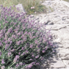 |
Lavender, Wild
Mountain (Lavandula angustifolia)
certified organic crop
Extraction method: steam distillation from the flowering twigs
A rare treasure and a speciality of Farfalla. Wild lavender,
which grows between 900 and 1600 metres, is a small and insignificant
plant compared to the cultivated variety, but yields the finest
quality of lavender oil. The intense sun and hardy growing conditions
give this essential oil its enormous potency and sweet-spicy
aroma. The harvest is extremely arduous: our organic farmers
cover large distances in trackless mountain terrain. |
| 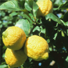 |
Lemon
(Citrus limonum)
certified organic crop
Extraction method: cold pressed from the fruit peel
It is important to use organically grown citrus fruits, as conventional
productions use large quantities of pesticide and fungicide.
The clear fragrance of the lemon has a refreshing, invigorating
effect. It raises low spirits and restores vitality. It is cleansing,
uplifting and refreshing. Travellers will find it ideal for
freshening the air in hotel rooms, cars, etc. Effective in skincare,
rejuvenating. |
| 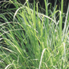 |
Lemongrass (Cymbopogon
flexuosus)
certified organic crop
Extraction method: steam distillation from the grass
Lemongrass is refreshing and uplifting for the stressed and
overworked. It alleviates tiredness and enhances concentration.
Excellently suited for deodorising rooms and as a protection
against negative vibrations. Repels mosquitoes and other insects.
For cleaning purposes, add 3 drops of essential oil to your
cleaning water. |
| 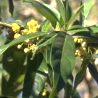 |
Litsea Cubeba
/ May Chang (Litsea cubeba)
certified organic crop
Extraction method: steam distillation from the fruit
A fresh-fruity scent, similar to lemon, with a sweet undertone.
With its high citral content, the oil promotes enthusiasm, is
invigorating and lifts the spirit. Litsea is used to cleanse
and purify rooms and as a top note in fresh-fruity perfumes.
On long car journeys, litsea aids concentration and increases
alertness. |
| 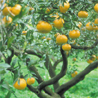 |
Mandarin (Citrus
reticulata)
certified organic crop
Extraction method: cold pressed from the fruit peel
This sweet, tangy scent is a great favourite with children.
It has a calming effect on the anxious and restless. Its refreshing
aroma has an uplifting quality and often helps to banish depression
and anxiety. The scent of mandarin is spiritually enhancing.
Caution: |
| 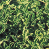 |
Marjoram, Sweet
(Origanum majorana)
certified organic crop
Extraction method: steam distillation from the leaves
It is thought to be one of the best oils to use in massage for
its warming and relaxing properties. It is excellent in dealing
with muscular aches and pains and promoting a feeling of well
being and warmth. It has a calming effect on the nervous system.
It may give comfort in cases of grief and loneliness. It is
excellent for hyperactive people. Caution: |
| 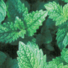 |
Melissa (Melissa
officinalis)
certified organic crop
Extraction method: steam distillation from the leaves
The Greek «melissa» means «honey bee».
This “elixir of life” has a fresh, clear, scent with
an uplifting effect on the emotions. It removes tension and
calms the nerves, strengthens the spirit and warms the heart.
It is generally relaxing and energising, and drives away gloomy
thoughts. |
 |
Myrrh (Commiphora
myrrha)
wild crop
Extraction method: steam distillation from the resin
The myrrh tree belongs to the balsam-yielding plants and loves
the burning sun of the Arabian desert regions. Myrrh gives a
lift to feelings of weakness of mind and enhances the spirit.
It has been used in prayer, meditation and rituals since time
immemorial. Extremely valuable oil in the care of skin and mouth
sores. Myrrh has a strong purifying and balancing effect. |
| 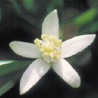 |
Neroli / Orange Blossom
(Citrus aurantium bigaradia)
certified organic crop
Extraction method: steam distillation from the flowers
The way the powerful fragrance of the blossoms delight the senses
is nothing short of magical. The scent of neroli vibrates at
a very high frequency and resonates deep in the soul. It helps
to alleviate tension and anxiety, and is regarded as very calming
and soothing. Ideal for the treatment of stress related complaints.
A good oil for the care of dry and sensitive skin. |
| 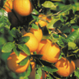 |
Orange, Sweet (Citrus
sinensis)
certified organic crop
Extraction method: cold pressed from the fruit peel
This sweet, delightful essential oil has a relaxing effect on
the restless or stressed. It is cheering and helps soothe away
worries and cares. Orange essential oil creates a pleasant atmosphere
and feeling of well-being whilst, at the same time, refreshing,
energising and balancing. Caution: |
|
|
return >
A - G, continue
> P - Z |